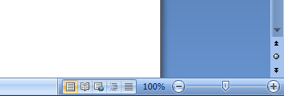
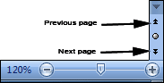
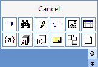

Free
computer Tutorials
|
Free
computer Tutorials
|
|
 home home |
|
|||||
Microsoft Word 2007 to 2010Finding your way aroundHave a look at the bottom right of your screen and locate the following
area:  If your screen is too small or too large, you can use the zoom slider to increase or decrease the size of your page. Hold down your left mouse button on the slider. Keep it held down and move it to the left to make your page smaller, and to the right to make it bigger. (You can also click the plus and minus buttons.) The default setting is 100%, and the slider is in the middle.
Just above the slider, you'll see some arrows. The two sets of double arrows allow you to move up or down one page at a time:  Clicking the round button between the two sets of double arrows opens up a shortcut toolbar. This one:  The items on the menu are shortcuts that allow you to browse through various areas of your document. The double arrows then turn blue. So, for example, if you wanted to jump from image to image in your document, you would click the Graphic item on the toolbar, which is the second from the right on the top row in the image above. After the double arrows turn blue, you would click one to move to the next or previous image. Another area worth exploring is just to the left of the zoom slider.
This one: These are various page views you can have. The first one, highlighted above, is called Print Layout, and is the default. Click the other four to see what they do. To get out of Full Screen, which is the second one, click the Close button in the top right. Click back on the first icon, however, when you finished exploring. We'll make a start. <--Back to the Word Contents Page View all our Home Study Computer Courses
|
||||||
|